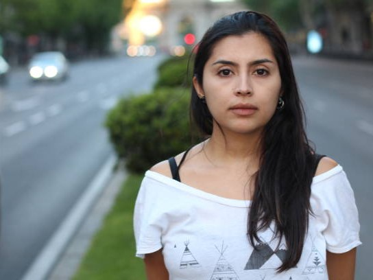

Alma Jimenez
“En 18 años de matrimonio sufrí violencia psicológica, económica y física hasta que finalmente decidí sacar de mi vida a mi esposo. Su familia le justificaba no pagar pensión alimenticia porque decían que yo lo había corrido."
... [leer más]
El feminismo entró a mi vida y me permitió tomar valor para denunciar la violencia, no sólo en mi vida privada, sino en las instituciones, porque desde que puse un pie en las oficinas del Ministerio Público me cuestionaron por qué denunciaba “si eso ya tenía tiempo”. Me dijeron que si estaba segura, que lo podían meter a la cárcel y que luego las mujeres cambiamos de opinión. Finalmente les dije: ¿si yo fuera hombre me estarían preguntando lo mismo? Encontré un sitio en línea llamado Háblalo, donde un abogado me asesoró y una psicóloga me orientó, pero ese centro desapareció con el cambio de gobierno, así que me volví a quedar sola. Llevo meses luchando y solo me mueve la firme idea de que tengo derechos. Aunque también tengo miedo, estoy aprendiendo que debo valorarme, quererme, porque estoy educando a un joven y una jovencita. Quiero que se amen y se respeten para que puedan tener relaciones sanas. En todo este proceso he visto con tristeza cómo mujeres juzgan, destrozan y violentan los derechos de otras mujeres y eso debe detenerse. Aprendamos a ser solidarias, de eso se trata este movimiento. Solidaridad entre nosotras para, juntas, poder luchar contra tanta violencia
... [leer menos]

Amanda González
“Tengo 67 años y me tomó mucho tiempo entender que, como mujeres, tenemos TODO el derecho de decidir sobre nuestros cuerpos y nuestras vidas. Tardé mucho, pero hoy comprendo el feminismo y lo apoyo al 100%”
... [leer más]
Hace dos años me cayó el veinte de que fui víctima de violencia en una relación de pareja, en la cual pensé que viviría una luna de miel. Fui víctima de mucha violencia verbal, casi diario, y fui golpeada en tres ocasiones. Logró encerrarme y aislarme de mis amigos y familia cercana. No podía salir a la calle si no era con él. Fueron 3 años de infierno y temores. Él había sido un gran amigo al que le confiaba mis cosas y sabía mucho de mí. No lo dejaba por temor a represalias y constantes amenazas. Me costó mucho armarme de valor y dar el paso definitivo para dejarlo y no temerle más.Siempre he sido una mujer de carácter y es difícil doblarme, pero cuando el lobo viene disfrazado de cordero una suele caer en la trampa. Hace dos años me cayó el veinte de que fui víctima de violencia en una relación de pareja, en la cual pensé que viviría una luna de miel. Fui víctima de mucha violencia verbal, casi diario, y fui golpeada en tres ocasiones. Logró encerrarme y aislarme de mis amigos y familia cercana. No podía salir a la calle si no era con él. Fueron 3 años de infierno y temores. Él había sido un gran amigo al que le confiaba mis cosas y sabía mucho de mí. No lo dejaba por temor a represalias y constantes amenazas. Me costó mucho armarme de valor y dar el paso definitivo para dejarlo y no temerle más.Siempre he sido una mujer de carácter y es difícil doblarme, pero cuando el lobo viene disfrazado de cordero una suele caer en la trampa.
... [leer menos]
Tamara Mares
“Estaba inmersa en una relación violenta, cuya violencia, irónicamente, nunca reconocí."
... [leer más]
Al confiarle a una de mis amigas los problemas de mi relación, ella me fue abriendo los ojos a lo que yo estaba viviendo. Ella me enseñó la magia de construir con mujeres, me dio la fuerza para salir de ahí. Con ella he aprendido, día con día, la responsabilidad afectiva que tenemos con otros y con nosotras mismas. Me acerqué al feminismo como manera de sanar, de tejer redes entre mujeres para fortalecernos, comprendernos, ser más empáticas y unirnos para tirar el patriarcado, machito por machito.
... [leer menos]
Marcela Rios
“El hombre al que amaba me violó. Yo no sabía que me había violado porque todavía no sabía que existe la violación dentro de una relación amorosa"
... [leer más]
El instinto me llevó a buscar mentores e información. La literatura feminista que descubrí describía muy bien las dinámicas sociales y machistas que habían permitido que cayera y permaneciera en una relación abusiva. Esa fue la información que me dio valor, inspiración y motivación para trabajar en mí misma, sanar y ayudar a otras mujeres a romper esa cadena de violencia sistemática. Cuando descubres el feminismo y das un paso hacia delante, no hay vuelta atrás
... [leer menos]